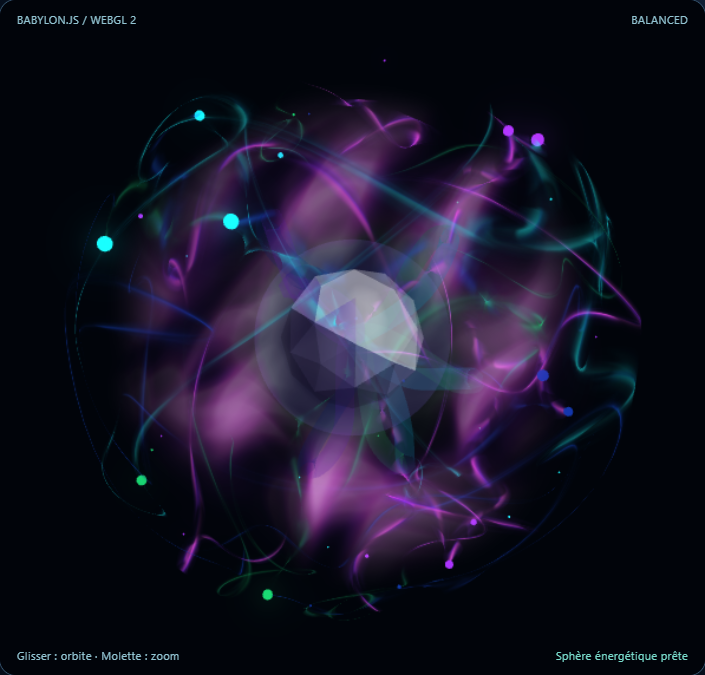
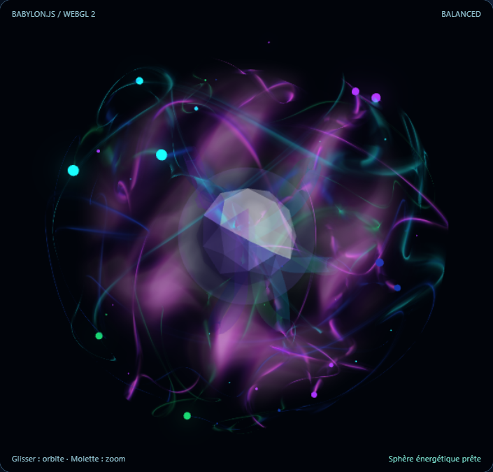
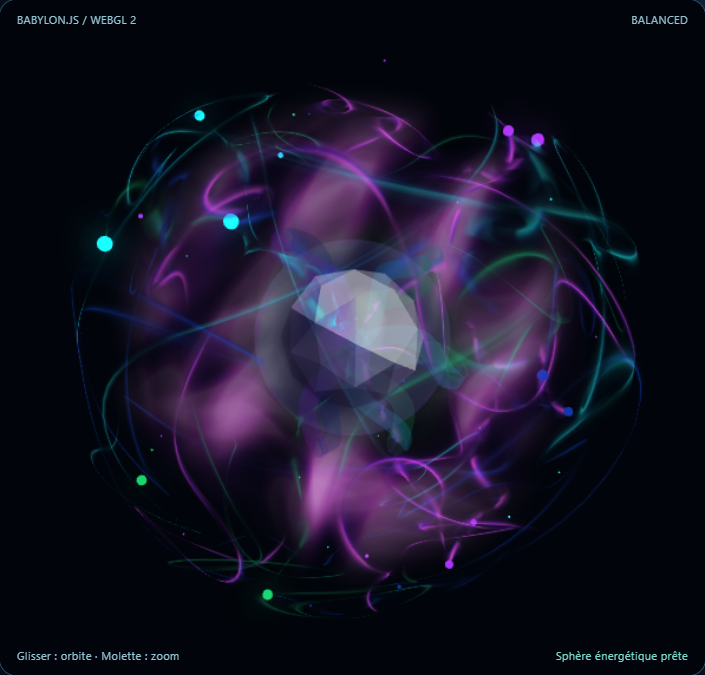
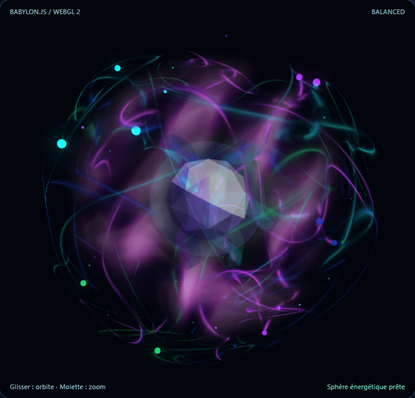

Deux modifications de shader, sur le noyau à 80 facettes. Aucun changement des courants, des nœuds, de la géométrie, des quatre modes ou de l'enveloppe. R202.60 reste la version stable.
RTX 3090 · WebGL2Même angle · même frame177 tests PASS / 0 FAIL / 3 SKIPValidation artistique : en attente
Mode 0 — Vue de face
Avant · R202.60 stable
Noyau gris-lavande, facettes définies

Après · R202.61 candidat
Facettes plus blanches-violettes, centre mieux éclairé

Mode 2 — Seconde forme
Avant · R202.60 stable

Après · R202.61 candidat

Rendu vivant : comparer librement
Les deux boutons ouvrent la version choisie dans le même cadre interactif. La caméra se déplace à la souris, et les modes sont accessibles dans l'application.